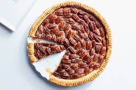

Grandma's Lemon Meringue Pie

One 9-inch pie
30 Min - Prep time
10 Min - Cook time
40 Min - Total
8 Servings
INGREDIENTS
- 1 cup white sugar
- 2 tbsp all-purpose flour
- 3 tbsp cornstarch
- 1/4 tsp salt
- 1 1/2 cups water
- 2 lemons, juiced and zested
- 2 tbsp butter
- 4 egg yolks, beaten
- 1(9inch) pie crust, baked
- 4 egg whites
- 6 tbsp white sugar
DIRECTIONS
- Preheat Oven: Preheat oven to 350 degrees F (175 degrees C).
- Make Lemon Filling : In a medium saucepan...
- Whisk together 1 cup sugar, flour
- Stir in water, lemon juice and lemon zest
- Make MeringueIn a large glass or metal bowl ...
Whip egg whites until foamy.
Add sugar gradually, and continue to whip until stiff peaks form.
Spread meringue over pie, sealing the edges at the crust.
- BakeBake in preheated oven for 10 minutes, or until meringue is golden brown.
This is our favorite recipe here at Granny's Pies. It has been enjoyed by pin fans for many years.
USER COMMENTS
This is a very fun recipe to follow, because Grandma makes it sweet and simple. This pie is thickened
with cornstarch and flour in addition to egg yolks, and contains no milk.
- Emilie S.
Q: What do you call an ape who loves pie?
A: A meringue-utan.
- Vickie K.
This site can really engage my interest. Follow the recipe above and make it so! This pie is number one.
- Jean-Luc Piecard
LINKS
Search for other lemon meringue pie recipes
Home
Copyright © 2012 Granny's Pies |
A Granny's Pies Production |
All rights reserved